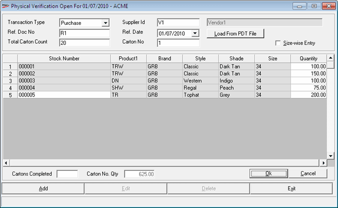

The Physical Verification – Add window is displayed as shown.

Transaction Type: Select the transaction type as Purchase, Transfer In, Approval Returns or Misc Rcpts.
Supplier Id: Enter a HO/ Chain Store Location Id if the transaction type is Transfer In. Similarly, enter the Vendor Id for Purchases, and for other types of transactions enter Customer code or Vendor ID as the case may be. Alternatively, you may press F2 to open the browse window for making the required selection.
Ref. Doc. No.: Enter the supplier's dispatch document number which is typically an Invoice Number or a Dispatch Challan Number.
Note: A Consignment is identified by the combination of details such as Supplier Id, Ref. Doc. No. and Ref. Date. Hence for all batches and Goods Inwards, the same number is to be specified.
Ref. Date: Enter the reference date. The date can be entered in dd/mm/yy format or click on the drop-down button to open a calendar to select the required date.
Total Carton Count: Enter the number of cartons received at the store for physical verification. Entry of value to this field is accepted only when entering the first batch of physical verification for a given consignment.
Note: Once saved, this count can not be altered.
Carton Number: Enter a unique carton number for each batch of a document which acts as its key.
Note: Depending on the set value of the parameter - Allow PDT File Loading in Goods Inwards/Goods Outwards/Physical Verification, a button named Load From PDT File will be displayed on the right hand side of Carton Number field.
Load from PDT File: Click this option to load Item Details from Text file.
Size-wise Entry: Check this box to switch the mode of entry from stock number mode to size-wise mode or from size-wise mode to stock number mode.
Stock Number & Quantity Grid: This window displays the stock numbers and quantities recorded. The rows in the grid get added as and when new entries are added through stock number and quantity text boxes.
Stock Number: Enter the stock number or press F2 to view the Advanced Item Search window. Select the stock number from the list and the grid in the Physical Verification window gets populated with the details.
Quantity: Enter the quantity depending on the value set for the parameter - Apply LSQ in Physical Verification. If set, then as the stock number is recorded (or scanned), the quantity is assumed to be Least Saleable Quantity (usually 1) specified in the items master and a new row gets added to the grid. Also, if Club Duplicate Items parameter is set to ON, then if the same stock number has been recorded earlier and added to the grid as a row, the quantity in that row gets increased by least saleable quantity.
Cartons Completed: Displays the number of cartons (batches) completed for the given inward document.
Carton No. Qty: Displays the total quantity of all the stock numbers recorded. This is for verifying the physical count of items in the batch.